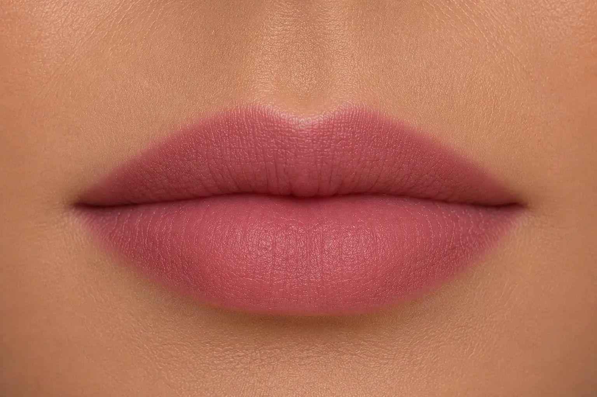

Akvarelové rty

Podtrhněte krásu vašich přirozených rtů. Jemná technika konturování rtů, která klade důraz na přirozenost. Aplikace pigmentu po celé ploše dodá rtům opticky plnější, ale zároveň stále přirozený vzhled asrovná případnou asymetrii.
Aplikace trvá:3-3,5 hodiny
Výsledek vydrží:2-3 roky